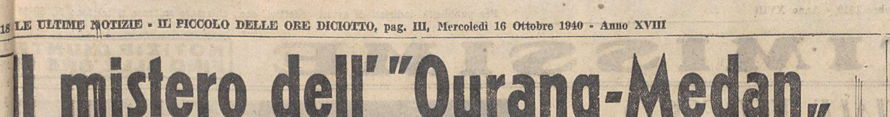
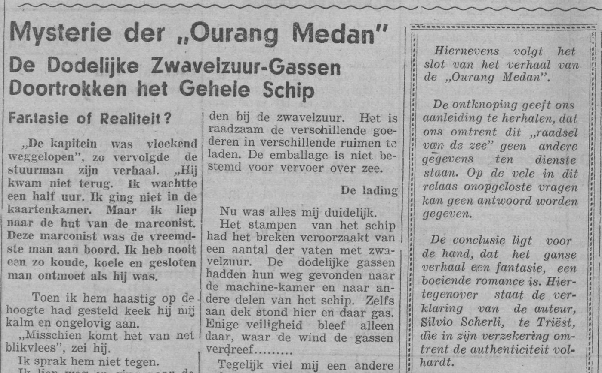
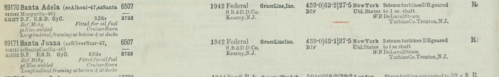

Trieste, the Netherlands, the United States · 1940 to 1965
Did a Dutch freighter named Ourang Medan lose her whole crew to an unexplained death in the Strait of Malacca in 1947 or 1948, and if not, who made the story up?
What happened. In the version told today, a Dutch freighter called the Ourang Medan sent a distress call from the Strait of Malacca, the sea lane between Malaya and Sumatra, in February 1948: the officers were dead, the crew probably dead too, and the last words were "I die". An American ship, the Silver Star, found her drifting and put a boarding party aboard, who found the crew dead on their backs with faces turned up and mouths open, and even the ship's dog dead. Smoke rose from a hold, the boarding party fled, and the ship exploded and sank. Explanations offered since then range from fumes from a cargo of potassium cyanide and nitroglycerine to carbon monoxide, nerve gas and "something from the unknown".
Why it is a mystery. No port of registry, owner, rescue log or inquiry has ever been produced for the ship, and no ship of the name is in any list of the world's merchant ships. Those who think something real happened point to where the story appeared: the United States Coast Guard printed it in 1952 in its own safety magazine for merchant seamen, Proceedings of the Merchant Marine Council; a letter about it lies in the CIA's declassified files; The American Weekly, the Sunday magazine of the Hearst newspapers, claimed in 1948 that its research showed the tragedy had happened; and popular accounts from the American broadcaster Frank Edwards (1956) to the British writer Roy Bainton (1999) present it as a documented event. The sceptics, among them the blogger Estelle Hargraves (2015), Brian Dunning's Skeptoid podcast (2020) and the Dutch researcher Theo Paijmans (2021), answer that the Coast Guard item names no source, that the "CIA memo" is a private citizen's letter, and that Paijmans, writing in Fortean Times, the British magazine of strange phenomena, traced the tale to an Italian newspaper of 1940, where it is dated 1939 and set in the South Pacific. Even the sceptics had checked Lloyd's Register, the annual list of the world's merchant ships, by enquiry rather than by reading the volumes, and little was known of the Italian author.
How it was judged. Every printing of the story was read in the order it appeared, from the earliest known, a signed article in the Trieste evening paper Il Piccolo delle Ore Diciotto (Il Piccolo) of 16 October 1940, through reprints in nine countries to the books of the 1950s and 1960s, with every quoted passage transcribed from the page image and transcribed again blind (without sight of the first transcription) as a check. The scanned volumes of Lloyd's Register for 1938/39 to 1950, its quarterly returns of ships lost (the Wreck Returns) for 1946 to 1949, the Dutch fleet databases and the Singapore press were searched in full text; the author was traced through official gazettes, city directories, civil registers and his own letters; and each detail of the modern story was dated to the printing that introduced it. What came out is that the story was written by one man, Silvio Scherli, a ship's radio officer and freelance journalist of Trieste, the Italian port at the head of the Adriatic: he published it in 1940 as an event of 1939 off the Solomon Islands, added a sequel with a sole survivor in 1941, and in 1948 sold both, re-dated to 1947, to the Dutch weekly Elsevier's Weekblad, whose editors printed a note that they had nothing beyond his personal assurance; the Strait of Malacca, the date February 1948 and the Silver Star were added later by American and German writers. What tipped the balance was the texts, the author's shifting dates, places, finders and casualty counts, the re-used photographs and the absence of any independent report, with the registers adding only that no ship of that name existed; the verdict is fabricated, invented outright about 85 percent, a real incident under another name about 14 percent, genuine as told below 1 percent, and an entry in a register or in a return of ships lost, a contemporary news report or a rescue log would overturn it.
Fabricated: the story was written by Silvio Scherli in Trieste in 1940 and published as fact. Invented outright about 85%; a real incident under another name, altered beyond recognition, about 14%; genuine as told below 1%.
The story's growth is traced printing by printing from dated texts: the key ones are reproduced as page images, the rest are marked as reported or as search snippets, and every quoted passage was transcribed a second time blind against the images. The registers rule out the ship as described and cannot rule out a real incident under another name; the percentages are judgments.
The percentages are judgments. Confidence that the story as told, in any of its dated versions (November 1939, June 1947, February 1948), records the loss of a real ship is below 1 percent: a named steamer with a crew of forty would stand in Lloyd's Register and its Wreck Returns, and none does. The 14 percent is the room left for a real derelict or shipboard poisoning, under another name, that Scherli heard of at sea and altered beyond recognition. Register searches cannot close that residual, because the digitised volumes are incomplete for the war years and a kernel (a real event behind the story) need not have been a total loss at all. The texts are what bound it: the story's structure is the Mary Celeste pattern of sea fiction (the Mary Celeste was found under sail with no one aboard in 1872), the author wrote a whole series of such dramas as reportage, he re-used the same photographs for events eight years apart, and nothing in any version has ever been matched to a documented incident.
The split between "invented" and "a real incident under another name" weighs those textual points against the one consideration on the other side, that the author was a working ship's radio officer. A reader who weighs that more heavily could put the residual at a quarter without changing the first line.
The best argument for a real kernel is the man himself, since no document supports it. The technical texture of his story is a radio man's (the 600-metre distress band, the wavelength reserved for distress calls; the request to relay by short wave; the medical-advice service; the auxiliary transmitter), and a seaman-journalist might have heard, in a mess room, of a derelict with a poisoned crew and built the tale on it. Against this: no version names a rescuing ship that can be traced, her master, a port, an owner or a casualty number; the one finder that is named, the American torpedo boat "W 716" of the 1940 article, did not exist; his own 1948 sequel pre-empts the register check by having the survivor explain that ships of this kind "are no longer listed in Lloyd's Register", an explanation that is no evidence of an event; the same two photographs serve for events eight years apart; and between his own three versions the author moved the SOS from 13 to 19 November, the explosion from hatch two to hold four, the ship from Australian to Dutch ownership and the dead from twelve to twenty-two.
The shares are judgments, and the third is below 1 percent. They weigh the textual evidence (three versions by the author that contradict one another, photographs re-used for events eight years apart, no independent report in any archive) against the one consideration on the other side, that Scherli was a working ship's radio officer. A reader who weighs that more heavily could put the residual for a real incident under another name at a quarter without changing the first line.
Every printing of the story was read in the order it appeared, from the earliest known, a signed article in the Trieste evening paper Il Piccolo delle Ore Diciotto of 16 October 1940 by Silvio Scherli, a ship's radio officer and freelance journalist, through reprints in nine countries to the books of the 1950s and 1960s, with every quoted passage transcribed from the page image and transcribed again blind, without sight of the first transcription, as a check. The key printings are reproduced as page images; the rest are marked as reported or as search snippets and attributed to the investigator who saw them.
Some archives could not be searched: Trove, the Australian newspaper archive, and the Fiji Times for 1939 to 1941; the Austrian National Library's ANNO viewer, the British Newspaper Archive and Gallica's full-text pages, which are gated, so that the Vienna and Karlsruhe printings of October 1940 are known from Theo Paijmans, the Dutch researcher who traced the tale to Trieste in 2021; and the Dutch weekly Elsevier's Weekblad, which printed the story in January 1948 re-dated to June 1947, and the weekly Panorama, which are not digitised. The Lloyd's Register volumes for 1940 and 1943 to 1946 are not online.
Three further checks were made. The scanned volumes of Lloyd's Register, the annual list of the world's merchant ships, for 1938/39 to 1950, its quarterly returns of ships lost (the Wreck Returns) for 1946 to 1949, the Dutch fleet databases and the Singapore press were searched in full text for the ship under every spelling. The author was traced through official gazettes, city directories, civil registers and his own letters. And each detail of the modern story was dated to the printing that introduced it: the Strait of Malacca, the date February 1948 and the rescue ship Silver Star were added later by American and German writers.
Figure 1 is the headline of the earliest printing known, Scherli's article in Il Piccolo of 16 October 1940, describing a disaster of "last November", 1939, in the South Pacific. Figure 2 is the final instalment of 13 March 1948 in De locomotief, the Semarang daily that reprinted the serial: under the sub-heading "Fantasie of Realiteit?" the editors, who had printed that they had nothing but the author's word, concluded that the obvious reading was fiction. Figure 3 is the entry in Lloyd's Register for 1947 for the Santa Juana, formerly the Silver Star: the only Silver Star had lost the name before the Register went to press in mid-1947.
What tipped the balance was the texts: the author's shifting dates, places, finders and casualty counts, the photographs re-used for events eight years apart, and the absence of any independent report; the registers add only that no ship of that name existed. Hence fabricated: invented outright about 85 in 100, a real incident under another name about 14, genuine as told below 1. The percentages are judgments, and the 14 is the room left for a real derelict or shipboard poisoning heard of at sea; an entry in a register or a return of ships lost, a contemporary news report or a rescue log would overturn the verdict.



Already established by others. Scherli's authorship, the Trieste priority of October 1940 (the Trieste printing being the earliest), the Associated Press (AP) cable of November 1940, the Elsevier's Weekblad printing of January 1948 and its editors' disclaimers were established by Theo Paijmans (Fortean Times 402, 2021), which remains the essential account. Estelle Hargraves (2015), Brian Dunning's Skeptoid (2020) and Paijmans showed that the Coast Guard editorial is unsigned and unsourced, that the "CIA document" is a private citizen's letter to the CIA, and that the Silver Star entered the story through the German pulp writer Otto Mielke's booklet of 1954 and Roy Bainton's article of 1999. The absence of the ship from Lloyd's Register was noted by Bainton and by later writers; that Taongi, the Marshall Islands atoll where the 1948 sequel lands its survivor, is uninhabited and has no mission, and that no torpedo boat "W 716" existed, were shown by Skeptoid and Paijmans.
What historians have said. Sceptical researchers had already traced the tale back to 1940. Estelle Hargraves (2015) published the Associated Press clipping of November 1940; Theo Paijmans (Fortean Times, 2021) established the Trieste priority of October 1940 (the Trieste printing being the earliest), Scherli's authorship and the Elsevier's Weekblad printing of 1948 with its editors' disclaimers; Roy Bainton (1999) had noted the ship's absence from Lloyd's Register; Brian Dunning's Skeptoid (2020) and Paijmans showed that the Coast Guard editorial is unsourced and the "CIA memo" a private citizen's letter. Popular accounts from Frank Edwards (1956) to Bainton (1999) still present a Strait of Malacca mystery of February 1948 backed by the US Coast Guard's magazine of 1952.
The report agrees with the main line of Paijmans's account and overturns nothing; the basic debunking is not new. Its additions strengthen and date that account: the Trieste texts in full, which show the survivor and the chemical cargo to be the author's own inventions of 1941; the author's life from official records; a register check that can be repeated by anyone; and each later "fact" tied to the printing that introduced it, so the version that looks documentary can be taken apart printing by printing.